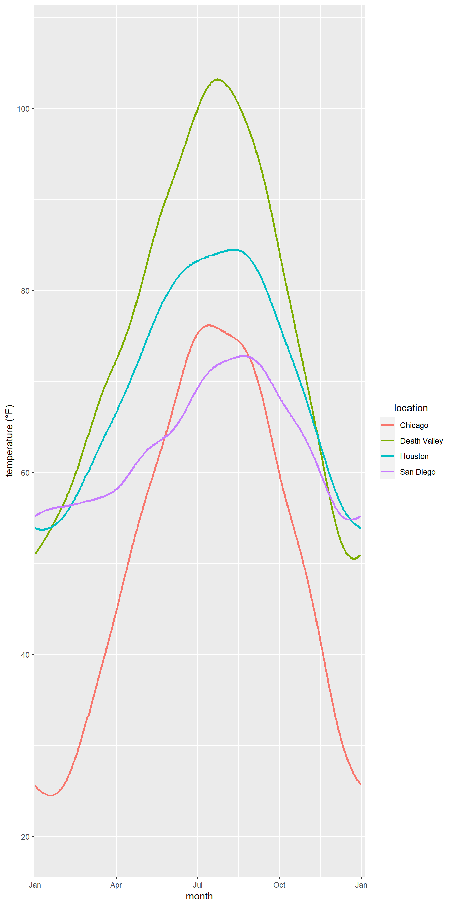
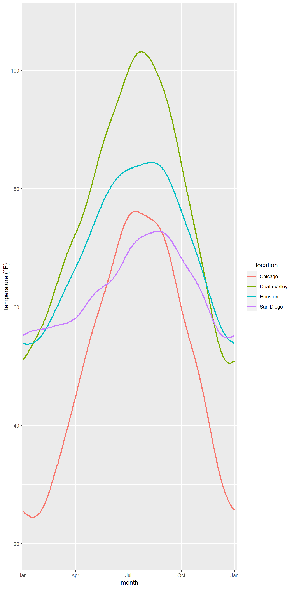
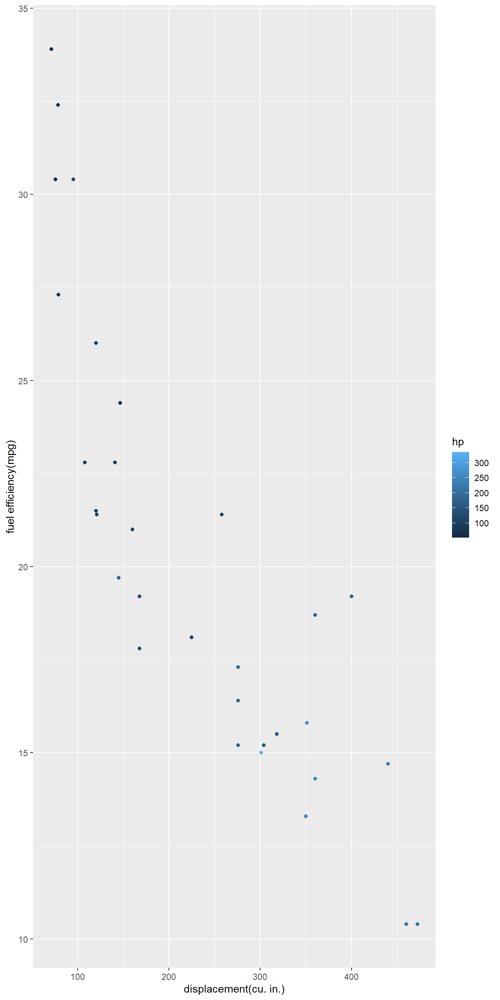
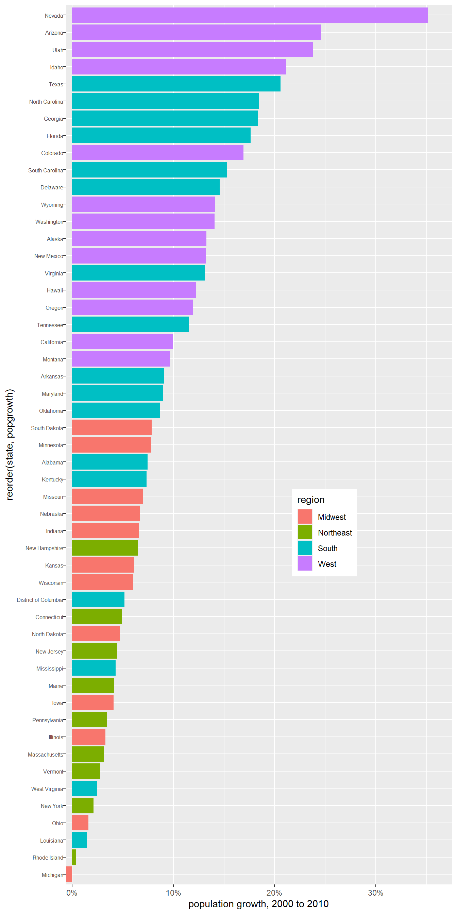
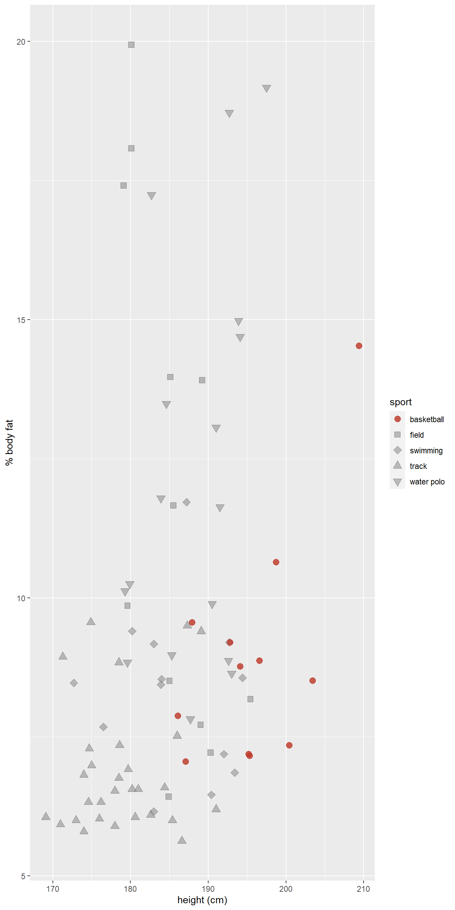
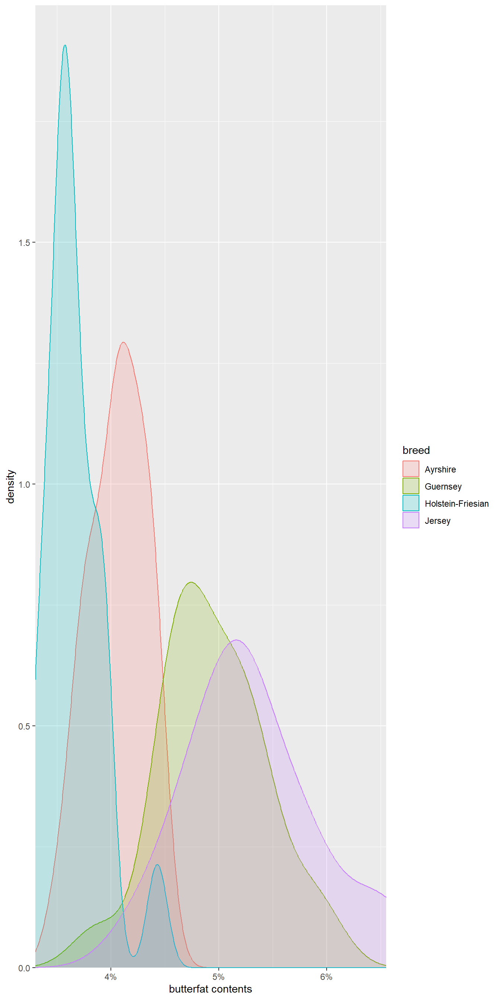

ncdc_temp <- read_csv(
'https://bcdanl.github.io/data/ncdc_temp_cleaned.csv')
ggplot(ncdc_temp, aes(x=month, y=temperature, color=location, group=location))+
stat_smooth()+
labs(y="Temperature(°F)", x="Month")
Renovate your personal website on GitHub using Quarto.
✔️
Provide ggplot codes to replicate the given figure.
ncdc_temp <- read_csv(
'https://bcdanl.github.io/data/ncdc_temp_cleaned.csv')
ggplot(ncdc_temp, aes(x=month, y=temperature, color=location, group=location))+
stat_smooth()+
labs(y="Temperature(°F)", x="Month")
ggplot(ncdc_temp, aes(x=month, y=temperature)) +
geom_boxplot(fill="gray")+
labs(x="Month", y = "Mean Temperature(°F)")+
theme_classic()
library(ggridges)
ggplot(ncdc_temp, aes(x = temperature, y = month)) +
geom_density_ridges(scale = 4, fill= "skyblue", color = "white")+
theme_ridges()
ggplot(mtcars, aes(x=disp, y=mpg)) +
geom_point(aes(color = disp))+
labs(x="Displacement (cu. in.)", y = "fuel efficency(MPG)")
popgrowth_df <- read_csv(
'https://bcdanl.github.io/data/popgrowth.csv')
ggplot(data = popgrowth_df, mapping = aes(x = reorder(state, popgrowth), popgrowth, fill=region)) +
geom_bar(stat = "identity") + coord_flip()+
labs(x="Population Growth, 2000 to 2010", y = "State In Order of Population Growth")
male_Aus <- read_csv(
'https://bcdanl.github.io/data/aus_athletics_male.csv')
ggplot(male_Aus, aes(x=height, y=bmi, shape=sport)) +
geom_point(fill= "grey",color="red")+
scale_shape_manual(values = c(16, 22, 23, 24, 25))+labs(x="Height(cm)", y = "Percentage Body Fat")
##Question 2g
titanic <- read_csv(
'https://bcdanl.github.io/data/titanic_cleaned.csv')
gg <- ggplot(data=titanic)
gg <- gg + geom_density(aes(x=age, group=survived, fill=sex))
gg <- gg + facet_grid(~sex)
gg <- gg + labs("AGE", "COUNT")
gg <- gg + scale_fill_manual( values = c("orange","blue"))
gg
cows_filtered <- read_csv(
'https://bcdanl.github.io/data/cows_filtered.csv')
library(ggplot2)
Plot <- ggplot(cows_filtered, aes(x=butterfat, fill=breed)) +
geom_density(alpha=0.6)+
labs(x="Butterfat Content", y = "Density")
Plot